^2 et
w:=i
^-1)=-1-i,
^-2)=0,
^-3)=-1+i.
^2 et
w:=i
^1)=-1+i,
^2)=0,
^3)=-1-i.
On calcule l'intégrale donnant cn de manière approchée par la méthode des
trapèzes. Ici Romberg
ne sert a rien, car le développement d'Euler Mac Laurin a ses coefficients
déjà nuls puisque la fonction que l'on intègre est périodique et
donc toutes ses dérivées sont égales en 0 et en 2 .
.
Si
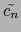 est la valeur approchée de cn obtenue par la
méthode des trapèzes, on a pour
-  n < :
n < :
= 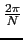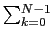ykexp(- 2ink /N)
/N)
puisque
xk = 2k /N et
f (xk) = yk on a
/N et
f (xk) = yk on a
f (xk)exp(- inxk) = ykexp(- 2ink /N) et
/N) et
f (0)exp(0) = f (2 )exp(- 2inN
)exp(- 2inN /N) = y0 = yN
/N) = y0 = yN
On a donc :
[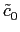,..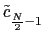,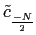,..c-1] =  FN([y0, y1...y(N-1)])
car
FN([y0, y1...y(N-1)])
car
si n  0, on a
0, on a
 = yn et
= yn et
si n < 0, on a
 = yn+N
si
= yn+N
si
 = exp(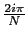),
= exp(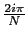),
 = 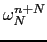 puisque
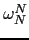 = 1
= 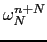 puisque
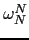 = 1
Propriétés
On retrouve les coefficients du polynôme interpolateur de f :
pn =  pour
-
pour
-  n < .
n < .
Ce qui veut dire que le polynôme trigonométrique
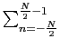 exp(inx)
interpole f (x) aux points x = 2k
exp(inx)
interpole f (x) aux points x = 2k /N.
/N.
Donc si f est un polynôme trigonométrique P de degré
m  :
:
f (t) = P(t) = 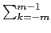ckexp(2ik t),
le polynôme trigonométrique qui interpole f = P est P lui-même, les
coefficients approchés sont exacts (
t),
le polynôme trigonométrique qui interpole f = P est P lui-même, les
coefficients approchés sont exacts (
 = cn).
= cn).
On peut, plus généralement calculer l'erreur
 - cn.
- cn.
On suppose que f est égale à sa série de Fourier, c'est à dire que
l'on a :
f (t) = 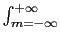cmexp(2i mt) avec
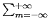| cm| <
mt) avec
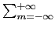| cm| < 
On a donc :
f (xk) = f (2k /N) = yk = cm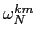 et
/N) = yk = cm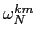 et
=  yk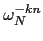
yk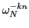
En remplaçant yk on obtient :
=  cm
cm
Or :
= 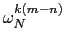 et
puisque
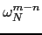 est une racine N-ième de l'unité, on a :
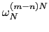 = 1 et
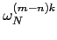 = 0.
Donc :
si m - n est un multiple de N (
m = n + l . N) on a
= N et
sinon
= 0
En intervertisant les deux sommes on a :
=  cm
cm
= 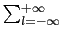c(n+l . N)
c'est à dire :
= ...cn-2 . N + cn-N + cncn+Ncn+2 . N + .....
Exemple :
f(t):=cos(t)+cos(2*t)
x:=f(2*k*pi/8)$(k=0..7)
On obtient :
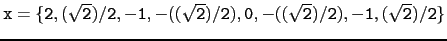
fft(x)=[0.0,4.0,4.0,0.0,0.0,0.0,4.0,4.0]
donc en divisant par N = 8 :
c0 = 0, c1 = 4.0/8, c2 = 4.0/2, c3 = 0.0,
c-4 = 0, c-3 = 0, c-2 = 4.0/8, = c-1 = 4.0/8
donc retrouve bien :
bk = 0 et
ak = c-k + ck vaut 1 si k = 1, 2 et 0 sinon.